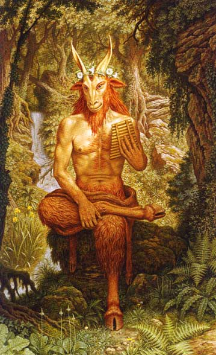

Saturday, May the 4th, 2013
back to: title, date or indexes
Call me slow-witted, if you will, but it took me an extraordinary length of time to realise that the manger, away in which the little Lord Jesus lay down his sweet head, was in fact a barnyard animal feeding trough. Yes, yes, I know that the carol is quite explicit on this matter, pointing out that the holy infant had “no crib for his bed”, but somehow in my mind I have always associated a manger with a newborn's sleep facility, rather than as what the OED calls “a long open box or trough in a stable, barn, etc., out of which horses and cattle can eat fodder”. You see what I mean about being slow-witted?
Anyway, what occurs to me are the immense repercussions had some roaming ravenous barnyard omnivore fallen upon the manger and, understandably assuming its contents to be dinner, gobbled up the little Lord Jesus. Two thousand and thirteen years of Christian civilization would have been as naught. Imagine that, if you can.
Though we might further consider the possibility that the barnyard omnivore, having ingested the Messiah, could itself have become the focus of religious yearnings. Let us assume that Joseph and Mary, fine, responsible parents as they were, were distracted by the arrival of shepherds and wise men and kings, and took their eyes off their mewling infant just long enough for the ravenous beast to come clattering into the farmyard building and guzzle the baby down.
Incidentally, just as I was confused about the precise nature of a manger, I was equally muddleheaded about the provenance of the kings. I thought they were “we three kings of Orion-Tar”. I had no idea where Orion-Tar might be—though it sounded vaguely like a region of outer space—nor why it had three kings rather than, as is usual, just the one, unless one is in Westeros, which has several. But the kings of Westeros are continually at each other's throats, whereas the three kings of Orion-Tar seem like boon companions, travelling together across the desert (or possibly the Red Waste) following a star.
Anyway, if we assume that Joseph and Mary and the shepherds and the Magi and the three kings of Orion-Tar suddenly hear a great gulping and belching sound from the ravenous omnivore, and turn to look, they might very well want to make sure that the beast does not go running off. It might be too late to save the little Lord Almighty, but the barnyard beast itself is now clearly sacred. It contains within it the light of heaven and the hope of all mankind.
Goats are omnivorous, as far as I know, so let us say that it is a goat that has swallowed the baby Jesus. It seems likely that, over the succeeding two thousand and thirteen years, we would have devised a culture based upon a goat-god. How different would our history be? It might be interesting to run the permutations through a superdupercomputer, as long range weather forecasters and climate change persons do. Or, more cheaply, one could create a board game, to while away the starlit evenings, snuggled down in heaps of straw, in barnyards far away.

Hooting Yard on the Air, May the 9th, 2013 : “Away In A Manger” (starts around 00:18)